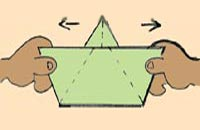

Eu estava com minha namorada na lanchonete, lá no Angeloni de Joinville. Depois de comermos, ficamos brincando com os guardanapos e ela fez um barquinho de papel em poucos segundos. Então me dei conta que já fazia pelo menos uns 10 anos desde a última vez que eu tinha feito um barquinho desses, como o tempo voa!
Forcei a memória, espremi os neurônios, chacoalhei a cabeça, mas não teve jeito: não consegui lembrar como fazia o bendito barquinho... Desisti, então ela me ensinou. Que vergonha, 30 anos na cara e não lembrar como faz um simples barquinho de papel. Tá, mas até que não era tão simples assim, tem que dobrar bastante :)
Para não esquecer mais como faz, vou deixar registrado aqui, pode salvar a tarde de algum pai desesperado que quer entreter seu filho por alguns minutos...
Eu tenho talento zero para o desenho, então resolvi pegar um papel e tirar fotos passo-a-passo de todo o procedimento.
Mas felizmente antes de começar esse trabalho documental tedioso, fui no Google e vi que já haviam sites excelentes ensinando a mesma coisa, com desenhos, fotos e até vídeos.
Então, vou poupar meu trabalho com as fotos e poupar o seu tempo de pesquisa na Internet. Aqui estão os sites realmente bons se você quer aprender a fazer um barquinho de papel:
Passo a passo de como fazer o barquinho de papel
|  |
| Clique aqui |
Passo a passo de como fazer um barco diferente (navio)
| Clique aqui |
Vídeo de como fazer o barquinho de papel
Outros tipos de barquinho
Se você já fez seu barquinho, mas ainda não está satisfeito, veja no site Origami Kids como fazer vários tipos diferentes de barco de papel, entre eles:
- Catamarã
- Veleiro
- Navio de navegação
- Barco a vapor
Curso de Origami Online
Tá, você já fez todos os barquinhos e aviões e ainda quer mais. Então comece a dobrar papel como gente grande e aprenda de uma vez a fazer vários tipos de animais e objeto. Estude o curso de origami online!
Aprenda mais:
- Como pintar o cabelo com papel crepom
- Como retirar os pontos de uma ferida (machucado, sutura)
- Adesivo para colar na lataria do carro (Plotter, Vinil)
- Como pintar camiseta com caneta para tecido
- Como pintar camiseta com tinta para tecido
- Desenho matriz para pintar na camiseta
- Porta-fitas cassete (k7) feito com palitos de sorvete
- Como fazer etiquetas para fitas cassete (k7)